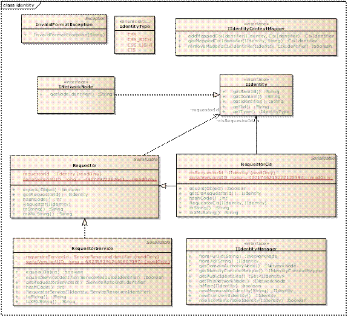

Identity
The Identity component provides the mapping from SOCIETIES Identifiers for Nodes to and from the underlying XMPP endpoint identifiers. It also helps in managing the multiple identities a user might have by mapping sets of Context Entities to specific role represented by an identity alias of a given user (see figure below for an overview).

The semantics of each interface or class in this package is simple, so - for completeness - we feel that a selection of the Javadoc documents for this package will be enough for Third Party developers to understand how to use the provided or required Identity interfaces. All interfaces represent functionalities exposed by the framework to Third Party service developers, and are thus "provided" interfaces.